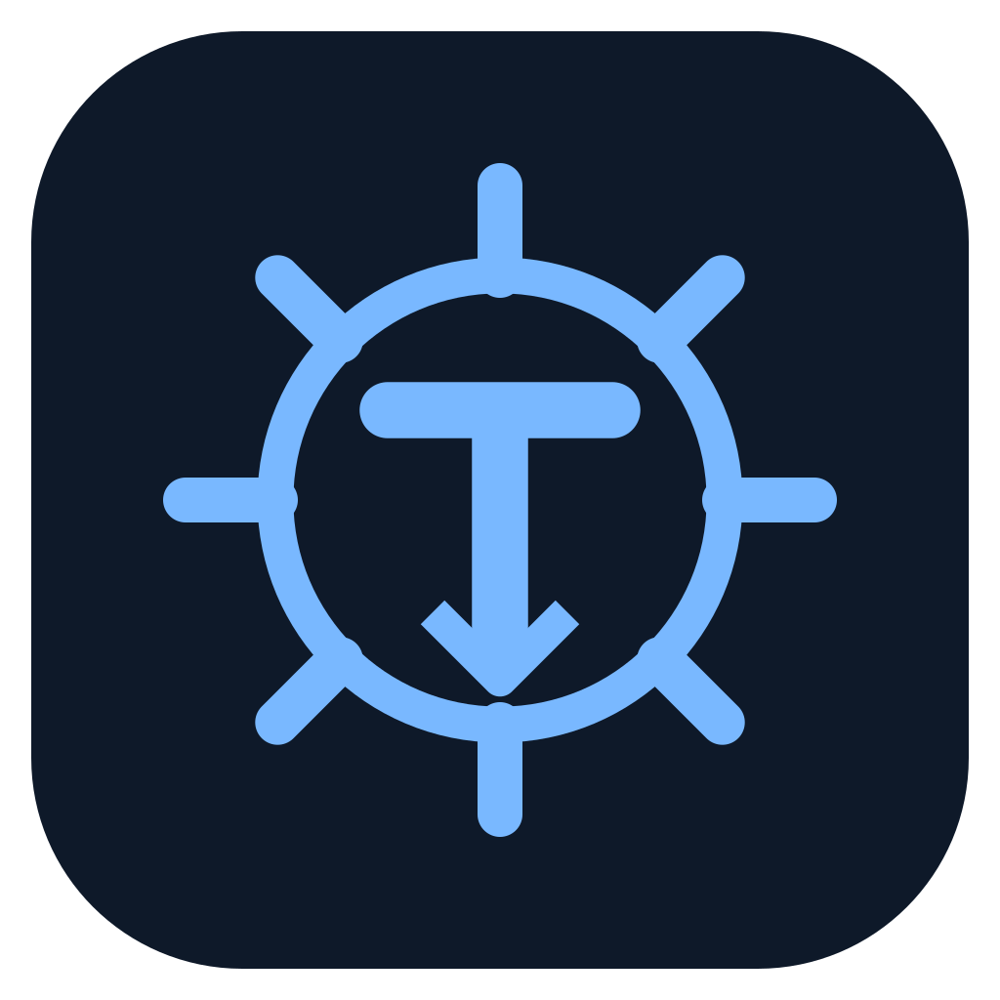

Timone DESKTOPYOUR KUBERNETES WORKSPACE
Your cluster,
in focus.
Explore resources, understand connections, and investigate issues. Read-only access, with data kept on your computer.

Timone DESKTOPYOUR KUBERNETES WORKSPACE
Explore resources, understand connections, and investigate issues. Read-only access, with data kept on your computer.